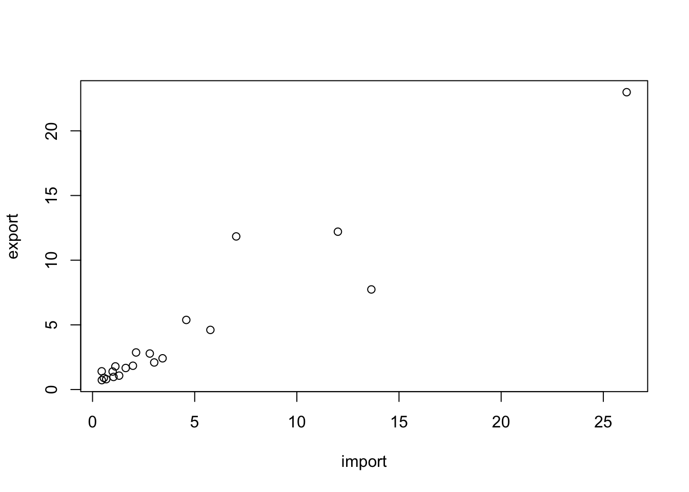

Chapter 1 R Basic
1.1 Playing R with R Markdown
Using
Cmd+Enter(Ctrl+Enterin Window) to excute the line where your cursor is located.Using
Cmd(Ctrl)+Shift+Enterto run all code in a cellUsing mouse to select multiple lines, then
Cmd(Ctrl)+Shift+cto comment/uncomment multiple lines.
a <- c(1, 2, 3, 4, 5)
b <- 4
a*b## [1] 4 8 12 16 201.1.0.2 Installing and loading packages
- 套件的使用分為安裝和載入兩個動作。通常安裝好R的時候就已經安裝好基本
base套件。當執行R時便會將base套件預載入程式的執行環境中。 - 非常多的R使用者會編寫第三方套件，並且將這些套件開放給群眾使用。通常這些套件已經被上載到R cran提供下載。而R cran上的套件我們可以使用
install.packages("package_name")來自動安裝到我們的電腦中。
1.1.0.3 Install following packages at home
- Remove comment
#symbol to install new package
# install.packages("jsonlite")
# install.packages("httr")# install.packages("tidyverse")
# install.packages("caret")
# install.packages("jiebaR")
# install.packages("topicmodels")
# install.packages("stm")1.1.0.4 Loading third-party packages
- 這些第三方套件被安裝好後，還需要被加載到程式的執行環境中才可以使用。因此要用
library(package_name)將其載入。
# loading jsonlite and httr library
library(jsonlite)
library(httr)1.1.0.5 註解
- 下列程式碼中開頭有
#符號者為註解，程式在執行時會自動忽略前面有#符號的程式碼。 - 當使用RMarkdown格式撰寫時，因為RMarkdown是在事後才生成文件，所以當遇到要安裝該套件的指令時，便會跳出錯誤訊息。
# a <- c(1, 2, 3, 4, 5)
# b <- 4
# a*b1.1.1 Loading dcard data
- 先不要去管
fromJSON(content(GET(url), "text"))是什麼意思，先著重在語言的形式。通常一個函式會寫為func_name()，所以上述其實是三個函式由內而外一層套一層，從最內層開始往外做。 - 這其實很make-sense，因為如果你有一個數學式
(1 + (3-3)/2)/8，也是會從最裡面那層做出來。
library(jsonlite)
library(httr)
url <- "https://www.dcard.tw/_api/forums/relationship/posts?popular=true"
res <- fromJSON(content(GET(url), "text"))
dplyr::glimpse(res)## Rows: 30
## Columns: 53
## $ id <int> 235931948, 238716114, 238711593, 238711362, 23…
## $ title <chr> "#公告 關於感情板的微西斯內容", "分手完馬上做…
## $ excerpt <chr> "各位卡友們好，小天使近期收到許多關於感情板西…
## $ anonymousSchool <lgl> FALSE, TRUE, TRUE, FALSE, TRUE, TRUE, TRUE, TR…
## $ anonymousDepartment <lgl> TRUE, TRUE, TRUE, TRUE, TRUE, TRUE, TRUE, TRUE…
## $ pinned <lgl> TRUE, FALSE, FALSE, FALSE, FALSE, FALSE, FALSE…
## $ forumId <chr> "42851318-b9e2-4a75-8a05-9fe180becefe", "42851…
## $ replyId <lgl> NA, NA, NA, NA, NA, NA, NA, NA, NA, NA, NA, NA…
## $ createdAt <chr> "2021-05-07T06:11:32.413Z", "2022-04-25T17:37:…
## $ updatedAt <chr> "2021-05-07T18:00:24.726Z", "2022-04-26T03:50:…
## $ commentCount <int> 34, 550, 328, 162, 384, 197, 112, 125, 130, 14…
## $ likeCount <int> 315, 2237, 2076, 1082, 860, 845, 670, 470, 385…
## $ withNickname <lgl> TRUE, FALSE, FALSE, FALSE, FALSE, FALSE, FALSE…
## $ tags <list> "HIDE_THUMBNAIL", "HIDE_THUMBNAIL", <>, <>, "…
## $ topics <list> <>, <"分手後", "吵架就說分手">, <"交友", "omi…
## $ meta <df[,2]> <data.frame[26 x 2]>
## $ forumName <chr> "感情", "感情", "感情", "感情", "感情", "感…
## $ forumAlias <chr> "relationship", "relationship", "relationship"…
## $ nsfw <lgl> FALSE, FALSE, FALSE, FALSE, FALSE, FALSE, FALS…
## $ gender <chr> "D", "M", "F", "F", "M", "F", "F", "F", "M", "…
## $ school <chr> "客服小天使", NA, NA, "國立臺灣藝術大學", NA, …
## $ department <chr> "dcard_support_1", NA, NA, NA, NA, NA, NA, NA,…
## $ replyTitle <lgl> NA, NA, NA, NA, NA, NA, NA, NA, NA, NA, NA, NA…
## $ mediaMeta <list> [<data.frame[0 x 0]>], [<data.frame[1 x 10]>],…
## $ reactions <list> [<data.frame[4 x 2]>], [<data.frame[6 x 2]>],…
## $ hidden <lgl> FALSE, FALSE, FALSE, FALSE, FALSE, FALSE, FAL…
## $ customStyle <lgl> NA, NA, NA, NA, NA, NA, NA, NA, NA, NA, NA, NA…
## $ isSuspiciousAccount <lgl> FALSE, FALSE, FALSE, FALSE, FALSE, FALSE, FALS…
## $ isModerator <lgl> FALSE, FALSE, FALSE, FALSE, FALSE, FALSE, FALS…
## $ layout <chr> "classic", "classic", "classic", "classic", "c…
## $ pinnedType <chr> "dcard", NA, NA, NA, NA, NA, NA, NA, NA, NA, N…
## $ pinnedPriority <dbl> 1.620368e+12, NA, NA, NA, NA, NA, NA, NA, NA, …
## $ spoilerAlert <lgl> FALSE, FALSE, FALSE, FALSE, FALSE, FALSE, FALS…
## $ categories <list> "公告", <NULL>, <NULL>, <NULL>, <NULL>, <NULL>…
## $ isSelectedPost <lgl> FALSE, FALSE, FALSE, FALSE, FALSE, FALSE, FAL…
## $ unsafe <lgl> FALSE, FALSE, FALSE, FALSE, FALSE, FALSE, FALS…
## $ totalCommentCount <int> 34, 644, 553, 245, 982, 321, 167, 220, 184, 19…
## $ withImages <lgl> FALSE, TRUE, TRUE, TRUE, FALSE, FALSE, TRUE, T…
## $ withVideos <lgl> FALSE, FALSE, FALSE, FALSE, FALSE, FALSE, FALS…
## $ media <list> [<data.frame[0 x 0]>], [<data.frame[0 x 0]>], …
## $ reportReasonText <chr> "", "", "", "", "", "", "", "", "", "", "", "…
## $ supportedReactions <lgl> NA, NA, NA, NA, NA, NA, NA, NA, NA, NA, NA, NA…
## $ excerptComments <list> [], [], [], [], [], [], [], [], [], [], [], []…
## $ edited <lgl> FALSE, FALSE, FALSE, FALSE, FALSE, FALSE, FAL…
## $ collectionCount <int> 0, 0, 0, 0, 0, 0, 0, 0, 0, 0, 0, 0, 0, 0, 0, 0…
## $ postAvatar <chr> "", "", "", "", "", "", "", "", "", "", "", ""…
## $ activityAvatar <chr> "", "", "", "", "", "", "", "", "", "", "", ""…
## $ verifiedBadge <lgl> TRUE, FALSE, FALSE, FALSE, FALSE, FALSE, FALSE…
## $ memberType <chr> "", "", "", "", "", "", "", "", "", "", "", ""…
## $ enablePrivateMessage <lgl> NA, FALSE, FALSE, NA, NA, FALSE, NA, NA, FALSE…
## $ enableNestedComment <lgl> NA, TRUE, TRUE, TRUE, TRUE, TRUE, TRUE, TRUE, …
## $ leaderboardCategoryId <chr> NA, NA, NA, NA, NA, NA, NA, NA, NA, NA, NA, NA…
## $ leaderboardCategoryName <chr> NA, NA, NA, NA, NA, NA, NA, NA, NA, NA, NA, NA…head(res)## id title
## 1 235931948 #公告 關於感情板的微西斯內容
## 2 238716114 分手完馬上做特別興奮
## 3 238711593 在交友軟體上發現朋友的男友
## 4 238711362 直男的浪漫…….紅蘿蔔真的去死
## 5 238709372 老婆跟我提離婚了
## 6 238715042 第一次看老公隱私，覺得心態好崩潰⋯
## excerpt
## 1 各位卡友們好，小天使近期收到許多關於感情板西斯內容的檢舉以及相關詢問，我們了解感情板是為討論情感關係所設立，而「性」也是感情中的一部份，因此不會禁止討論這些內容。但有部分文章內容描述過於露骨，或是除了
## 2 跟女友同居一年了，前一陣子為了誰該維持家中整潔而吵架感情決裂，氣的彼此說好分一分比較乾脆啦，東西都妳一個我一個分好了，講話也開始變得像陌生人一樣，變得非常客氣十分客套，但是過了一會，氣氛突然變得很詭異
## 3 在Omi上面看到朋友的男友，還like我，我嚇一跳問了我朋友，一問之下才發現原來不是初犯，之前這男生去年答應我朋友不再用，結果還是一樣！，還會加別的女生賴直接撩個夠～我朋友真的也很誇張的傻，她兩個禮拜
## 4 最近畢製快到，整天忙得要死三餐都隨便吃，（是真的隨便吃大概就餅乾、水果那些或喝飲料），男友剛看不下去幫我泡了一碗泡麵，但...打開泡麵，看見，滿滿ㄉ，紅蘿蔔，真的，不感動耶…，明知道我很挑食但又愛逼我
## 5 事情是這樣，簡單敘述。和老婆是因為懷孕而結婚了，原本小孩未出生前，我們都是在外居住。直到小孩出生，因為我們倆都有工作，無法帶小孩，加上我倆薪資不高，也不夠負擔保姆費用。所以把小孩帶回我家，因為小孩帶回
## 6 跟老公認識到現在從來沒有真的翻過他手機，一直都很信任他，相信他會自己拿捏跟女生的界線，所以基本上也不會限制他什麼，但最近因為懷疑他有事情隱瞞我，所以偷偷看了訊息。我們之前分手過，後來他找我複合，而且主
## anonymousSchool anonymousDepartment pinned
## 1 FALSE TRUE TRUE
## 2 TRUE TRUE FALSE
## 3 TRUE TRUE FALSE
## 4 FALSE TRUE FALSE
## 5 TRUE TRUE FALSE
## 6 TRUE TRUE FALSE
## forumId replyId createdAt
## 1 42851318-b9e2-4a75-8a05-9fe180becefe NA 2021-05-07T06:11:32.413Z
## 2 42851318-b9e2-4a75-8a05-9fe180becefe NA 2022-04-25T17:37:11.457Z
## 3 42851318-b9e2-4a75-8a05-9fe180becefe NA 2022-04-25T09:39:56.061Z
## 4 42851318-b9e2-4a75-8a05-9fe180becefe NA 2022-04-25T09:11:55.806Z
## 5 42851318-b9e2-4a75-8a05-9fe180becefe NA 2022-04-25T05:18:38.773Z
## 6 42851318-b9e2-4a75-8a05-9fe180becefe NA 2022-04-25T15:35:26.209Z
## updatedAt commentCount likeCount withNickname tags
## 1 2021-05-07T18:00:24.726Z 34 315 TRUE HIDE_THUMBNAIL
## 2 2022-04-26T03:50:46.275Z 550 2237 FALSE HIDE_THUMBNAIL
## 3 2022-04-26T11:21:34.628Z 328 2076 FALSE
## 4 2022-04-25T09:11:55.806Z 162 1082 FALSE
## 5 2022-04-25T05:18:38.773Z 384 860 FALSE HIDE_THUMBNAIL
## 6 2022-04-26T07:13:38.374Z 197 845 FALSE HIDE_THUMBNAIL
## topics meta.layout meta.disableAdSense forumName
## 1 classic TRUE 感情
## 2 分手後, 吵架就說分手 classic NA 感情
## 3 交友, omi, Omi, 交友軟體, 渣男 classic NA 感情
## 4 浪漫, 紅蘿蔔, 感情, 愛情, 男友 classic NA 感情
## 5 離婚 classic NA 感情
## 6 老公, 心態, 感情 classic NA 感情
## forumAlias nsfw gender school department replyTitle
## 1 relationship FALSE D 客服小天使 dcard_support_1 NA
## 2 relationship FALSE M <NA> <NA> NA
## 3 relationship FALSE F <NA> <NA> NA
## 4 relationship FALSE F 國立臺灣藝術大學 <NA> NA
## 5 relationship FALSE M <NA> <NA> NA
## 6 relationship FALSE F <NA> <NA> NA
## mediaMeta
## 1 NULL
## 2 e27e5875-4cda-422e-b011-a8205b9b2816, https://sticker-assets.dcard.tw/images/e93afb68-3148-4ae6-bfaf-2fe6bf071d35/orig.png, https://megapx.dcard.tw/v1/images/e93afb68-3148-4ae6-bfaf-2fe6bf071d35, , image/sticker, IMAGE_NOT_AVAILABLE, 2022-04-25T17:37:11.457Z, 2022-04-26T03:50:46.275Z, 512, 512
## 3 5431dc73-392b-43b6-b97c-50ed6d0c533a, 5431dc73-392b-43b6-b97c-50ed6d0c533a, f301b87a-4319-4a98-8d57-346ae6045ef6, a4a3ab81-aa8d-4bc0-8639-95dfbff15a39, 4cf70df7-82b8-48b4-81e2-6774fc773782, https://i.imgur.com/kiAugXAl.jpg, https://i.imgur.com/kiAugXA.jpg, https://i.imgur.com/Ck2m2Ws.jpg, https://i.imgur.com/R3mXqrH.jpg, https://i.imgur.com/r4mqWeS.jpg, https://i.imgur.com/kiAugXAl.jpg, https://imgur.com/kiAugXA, https://imgur.com/Ck2m2Ws, https://imgur.com/R3mXqrH, https://imgur.com/r4mqWeS, https://i.imgur.com/kiAugXAl.jpg, https://i.imgur.com/kiAugXAl.jpg, https://i.imgur.com/Ck2m2Wsl.jpg, https://i.imgur.com/R3mXqrHl.jpg, https://i.imgur.com/r4mqWeSl.jpg, image/thumbnail, image/imgur, image/imgur, image/imgur, image/imgur, ANNOTATED, ANNOTATED, ANNOTATED, ANNOTATED, 2022-04-26T11:05:56.528Z, 2022-04-26T11:05:56.528Z, 2022-04-26T11:21:34.628Z, 2022-04-25T09:43:27.577Z, 2022-04-26T11:05:56.528Z, 2022-04-26T11:21:34.628Z, 2022-04-26T11:21:34.628Z, 2022-04-26T11:21:34.628Z, 2022-04-26T11:21:34.628Z, 2022-04-26T11:21:34.628Z, 642, 642, 976, 1693, 1080, 951, 951, 1301, 2000, 1844, 0, 0, NA, NA, NA, 100, 100, NA, NA, NA, 642, 642, NA, NA, NA, 851, 851, NA, NA, NA
## 4 977b42a3-3085-4b4e-bd6b-2aa06f413557, 977b42a3-3085-4b4e-bd6b-2aa06f413557, b41dceac-7119-47fa-8fe5-ff27af51d5c8, https://i.imgur.com/PVxZRiIl.jpg, https://i.imgur.com/PVxZRiI.jpg, https://i.imgur.com/EjJNHnW.jpg, https://i.imgur.com/PVxZRiIl.jpg, https://imgur.com/PVxZRiI, https://imgur.com/EjJNHnW, https://i.imgur.com/PVxZRiIl.jpg, https://i.imgur.com/PVxZRiIl.jpg, https://i.imgur.com/EjJNHnWl.jpg, image/thumbnail, image/imgur, image/imgur, 2022-04-25T09:11:55.806Z, 2022-04-25T09:11:55.806Z, 2022-04-25T09:11:55.806Z, 2022-04-25T09:11:55.806Z, 2022-04-25T09:11:55.806Z, 2022-04-25T09:11:55.806Z, 1501, 1501, 1501, 2000, 2000, 2000
## 5 NULL
## 6 NULL
## reactions
## 1 286f599c-f86a-4932-82f0-f5a06f1eca03, e8e6bc5d-41b0-4129-b134-97507523d7ff, aa0d425f-d530-4478-9a77-fe3aedc79eea, 4b018f48-e184-445f-adf1-fc8e04ba09b9, 308, 4, 2, 1
## 2 286f599c-f86a-4932-82f0-f5a06f1eca03, e8e6bc5d-41b0-4129-b134-97507523d7ff, 4b018f48-e184-445f-adf1-fc8e04ba09b9, aa0d425f-d530-4478-9a77-fe3aedc79eea, 011ead16-9b83-4729-9fde-c588920c6c2d, 514c2569-fd53-4d9d-a415-bf0f88e7329f, 1871, 292, 66, 4, 3, 1
## 3 286f599c-f86a-4932-82f0-f5a06f1eca03, 4b018f48-e184-445f-adf1-fc8e04ba09b9, aa0d425f-d530-4478-9a77-fe3aedc79eea, e8e6bc5d-41b0-4129-b134-97507523d7ff, 514c2569-fd53-4d9d-a415-bf0f88e7329f, 1796, 125, 83, 50, 22
## 4 286f599c-f86a-4932-82f0-f5a06f1eca03, e8e6bc5d-41b0-4129-b134-97507523d7ff, 514c2569-fd53-4d9d-a415-bf0f88e7329f, 4b018f48-e184-445f-adf1-fc8e04ba09b9, 011ead16-9b83-4729-9fde-c588920c6c2d, 954, 120, 5, 2, 1
## 5 286f599c-f86a-4932-82f0-f5a06f1eca03, 514c2569-fd53-4d9d-a415-bf0f88e7329f, e8e6bc5d-41b0-4129-b134-97507523d7ff, 4b018f48-e184-445f-adf1-fc8e04ba09b9, aa0d425f-d530-4478-9a77-fe3aedc79eea, 743, 64, 40, 8, 5
## 6 286f599c-f86a-4932-82f0-f5a06f1eca03, 4b018f48-e184-445f-adf1-fc8e04ba09b9, e8e6bc5d-41b0-4129-b134-97507523d7ff, 514c2569-fd53-4d9d-a415-bf0f88e7329f, aa0d425f-d530-4478-9a77-fe3aedc79eea, 770, 31, 25, 12, 7
## hidden customStyle isSuspiciousAccount isModerator layout pinnedType
## 1 FALSE NA FALSE FALSE classic dcard
## 2 FALSE NA FALSE FALSE classic <NA>
## 3 FALSE NA FALSE FALSE classic <NA>
## 4 FALSE NA FALSE FALSE classic <NA>
## 5 FALSE NA FALSE FALSE classic <NA>
## 6 FALSE NA FALSE FALSE classic <NA>
## pinnedPriority spoilerAlert categories isSelectedPost unsafe
## 1 1.620368e+12 FALSE 公告 FALSE FALSE
## 2 NA FALSE NULL FALSE FALSE
## 3 NA FALSE NULL FALSE FALSE
## 4 NA FALSE NULL FALSE FALSE
## 5 NA FALSE NULL FALSE FALSE
## 6 NA FALSE NULL FALSE FALSE
## totalCommentCount withImages withVideos
## 1 34 FALSE FALSE
## 2 644 TRUE FALSE
## 3 553 TRUE FALSE
## 4 245 TRUE FALSE
## 5 982 FALSE FALSE
## 6 321 FALSE FALSE
## media
## 1 NULL
## 2 NULL
## 3 https://i.imgur.com/kiAugXA.jpg, https://i.imgur.com/Ck2m2Ws.jpg, https://i.imgur.com/R3mXqrH.jpg, https://i.imgur.com/r4mqWeS.jpg
## 4 https://i.imgur.com/PVxZRiI.jpg, https://i.imgur.com/EjJNHnW.jpg
## 5 NULL
## 6 NULL
## reportReasonText supportedReactions excerptComments edited collectionCount
## 1 NA NULL FALSE 0
## 2 NA NULL FALSE 0
## 3 NA NULL FALSE 0
## 4 NA NULL FALSE 0
## 5 NA NULL FALSE 0
## 6 NA NULL FALSE 0
## postAvatar activityAvatar verifiedBadge memberType enablePrivateMessage
## 1 TRUE NA
## 2 FALSE FALSE
## 3 FALSE FALSE
## 4 FALSE NA
## 5 FALSE NA
## 6 FALSE FALSE
## enableNestedComment leaderboardCategoryId leaderboardCategoryName
## 1 NA <NA> <NA>
## 2 TRUE <NA> <NA>
## 3 TRUE <NA> <NA>
## 4 TRUE <NA> <NA>
## 5 TRUE <NA> <NA>
## 6 TRUE <NA> <NA># View(res)1.1.2 Getting Taipei theft report data
1.1.2.1 Getting from the web directly
- Go to data.taipei
- Make a query “住宅竊盜”
- Open “住宅竊盜點位資訊”
- Click “API”
- Copy the API address and assign to url
url <- "https://data.taipei/api/v1/dataset/93d9bc2d-af08-4db7-a56b-9f0a49226fa3?scope=resourceAquire"
df <- read_json(url, simplifyVector = T)
head(df)## $result
## $result$limit
## [1] 20
##
## $result$offset
## [1] 0
##
## $result$count
## [1] 3321
##
## $result$sort
## [1] ""
##
## $result$results
## _id 編號 案類 發生日期 發生時段
## 1 1 1 住宅竊盜 1030623 08~10
## 2 2 2 住宅竊盜 1040101 00~02
## 3 3 3 住宅竊盜 1040101 00~02
## 4 4 4 住宅竊盜 1040101 06~08
## 5 5 5 住宅竊盜 1040101 10~12
## 6 6 6 住宅竊盜 1040102 00~02
## 7 7 7 住宅竊盜 1040102 06~08
## 8 8 8 住宅竊盜 1040102 06~08
## 9 9 9 住宅竊盜 1040102 10~12
## 10 10 10 住宅竊盜 1040104 10~12
## 11 11 11 住宅竊盜 1040104 12~14
## 12 12 12 住宅竊盜 1040105 00~02
## 13 13 13 住宅竊盜 1040105 04~06
## 14 14 14 住宅竊盜 1040105 04~06
## 15 15 15 住宅竊盜 1040105 12~14
## 16 16 16 住宅竊盜 1040105 16~18
## 17 17 17 住宅竊盜 1040105 18~20
## 18 18 18 住宅竊盜 1040106 04~06
## 19 19 19 住宅竊盜 1040106 16~18
## 20 20 20 住宅竊盜 1040107 16~18
## 發生地點
## 1 臺北市中正區廈門街91~120號
## 2 臺北市文山區萬美里萬寧街1~30號
## 3 臺北市信義區富台里忠孝東路5段295巷6弄1~30號
## 4 臺北市中山區新生北路1段91~120號
## 5 臺北市文山區明興里興隆路4段1~30號
## 6 臺北市士林區天福里1鄰忠誠路2段130巷1~30號
## 7 臺北市萬華區糖?里大理街159巷1~30號
## 8 臺北市萬華區糖?里大理街159巷1~30號
## 9 臺北市中山區吉林路121~150號
## 10 臺北市信義區五常里永吉路225巷32弄1~30號
## 11 臺北市士林區明勝里通河街31~60號
## 12 臺北市中山區南京東路3段181~210號
## 13 臺北市萬華區大理街159巷1~30號
## 14 臺北市萬華區糖?里大理街159巷1~30號
## 15 臺北市北投區吉慶里實踐街56巷1~30號
## 16 臺北市中正區忠勤里中華路2段311巷1~30號
## 17 臺北市文山區興福里12鄰景華街61~90號
## 18 臺北市信義區雅祥里基隆路1段1~30號
## 19 臺北市中正區水源里汀州路3段91~120號
## 20 臺北市文山區萬芳里萬芳路31~60號dplyr::glimpse(df)## List of 1
## $ result:List of 5
## ..$ limit : int 20
## ..$ offset : int 0
## ..$ count : int 3321
## ..$ sort : chr ""
## ..$ results:'data.frame': 20 obs. of 6 variables:
## .. ..$ _id : int [1:20] 1 2 3 4 5 6 7 8 9 10 ...
## .. ..$ 編號 : chr [1:20] "1" "2" "3" "4" ...
## .. ..$ 案類 : chr [1:20] "住宅竊盜" "住宅竊盜" "住宅竊盜" "住宅竊盜" ...
## .. ..$ 發生日期: chr [1:20] "1030623" "1040101" "1040101" "1040101" ...
## .. ..$ 發生時段: chr [1:20] "08~10" "00~02" "00~02" "06~08" ...
## .. ..$ 發生地點: chr [1:20] "臺北市中正區廈門街91~120號" "臺北市文山區萬美里萬寧街1~30號" "臺北市信義區富台里忠孝東路5段295巷6弄1~30號" "臺北市中山區新生北路1段91~120號" ...1.1.3 Loading a csv file in data directory
# if mac cannot read data
GET(url, write_disk("data/tptheft.csv", overwrite = TRUE))## Response [https://data.taipei/api/v1/dataset/93d9bc2d-af08-4db7-a56b-9f0a49226fa3?scope=resourceAquire]
## Date: 2022-04-26 15:53
## Status: 200
## Content-Type: application/json
## Size: 3.35 kB
## <ON DISK> /Users/jirlong/Dropbox/Programming/JOUR5014/data/tptheft.csvdf <- read.csv("data/tptheft.csv", fileEncoding = "big5")
head(df)## [1] X.result..limit.20
## [2] offset.0
## [3] count.3321
## [4] sort.
## [5] results..._id.1
## [6] 嚜輻楊..result..limit.20.offset.0.count.3321.sort...results..._id.1.嚜輻楊
## <0 列> (或零長度的 row.names)1.1.4 Loading MOI data through API
library(httr)
library(jsonlite)
url <- "https://www.ris.gov.tw/rs-opendata/api/v1/datastore/ODRP024/107?page=1"
first_page <- fromJSON(content(GET(url), "text"))
head(first_page$responseData)## statistic_yyy district_code site_id village edu sex
## 1 107 65000010001 新北市板橋區 留侯里 博畢 男
## 2 107 65000010001 新北市板橋區 留侯里 碩畢 男
## 3 107 65000010001 新北市板橋區 留侯里 大畢 男
## 4 107 65000010001 新北市板橋區 留侯里 專畢 男
## 5 107 65000010001 新北市板橋區 留侯里 高中畢 男
## 6 107 65000010001 新北市板橋區 留侯里 國中畢 男
## headhousehold_count
## 1 3
## 2 26
## 3 71
## 4 52
## 5 122
## 6 401.1.4.1 (deprecated) Getting 104 query data
deprecated due to blocked by new cookie or referer
url <- "https://www.104.com.tw/jobs/search/list?ro=0&kwop=7&keyword=%E8%B3%87%E6%96%99%E7%A7%91%E5%AD%B8&order=15&asc=0&page=4&mode=s&jobsource=2018indexpoc"
browseURL(url)
txt <- content(GET(url), "text")
res <- fromJSON(content(GET(url), "text"))
df <- res$data$list
head(df)1.1.5 Getting ubike
url <- "https://tcgbusfs.blob.core.windows.net/blobyoubike/YouBikeTP.json"
ubike.list <- fromJSON(content(GET(url),"text", encoding = "utf-8"))
ubike.v <- unlist(ubike.list$retVal)
ubike.m <- matrix(ubike.v, byrow = T, ncol = 14)
ubike.df <- as.data.frame(ubike.m)
names(ubike.df) <- names(ubike.list$retVal$`0001`)
head(ubike.df)## sno sna tot sbi sarea mday lat
## 1 0001 捷運市政府站(3號出口) 88 0 信義區 20220426235128 25.0408578889
## 2 0002 捷運國父紀念館站(2號出口) 16 0 大安區 20220426235125 25.041254
## 3 0004 市民廣場 32 0 信義區 20220426235143 25.0360361111
## 4 0005 興雅國中 32 8 信義區 20220426235131 25.0365638889
## 5 0006 臺北南山廣場 54 11 信義區 20220426235118 25.034047
## 6 0007 信義廣場(台北101) 80 0 信義區 20220426235123 25.0330388889
## lng ar
## 1 121.567904444 忠孝東路/松仁路(東南側)
## 2 121.55742 忠孝東路四段/光復南路口(西南側)
## 3 121.562325 市府路/松壽路(西北側)(鄰近台北101/台北世界貿易中心/台北探索館)
## 4 121.5686639 松仁路/松仁路95巷(東南側)(鄰近信義商圈/台北信義威秀影城)
## 5 121.565973 松智路/松廉路(東北側) (鄰近台北101/信義商圈/台北信義威秀影城)
## 6 121.565619444 松智路/信義路(東北側) (鄰近台北101)
## sareaen snaen
## 1 Xinyi Dist. MRT Taipei City Hall Stataion(Exit 3)-2
## 2 Daan Dist. MRT S.Y.S Memorial Hall Stataion(Exit 2.)
## 3 Xinyi Dist. Citizen Square
## 4 Xinyi Dist. Xingya Jr. High School
## 5 Xinyi Dist. NAN SHAN PLAZA
## 6 Xinyi Dist. Xinyi Square(Taipei 101)
## aren bemp act
## 1 The S.W. side of Road Zhongxiao East Road & Road Chung Yan. 85 1
## 2 Sec,4. Zhongxiao E.Rd/GuangFu S. Rd 16 1
## 3 The N.W. side of Road Shifu & Road Song Shou. 32 1
## 4 The S.E. side of Road Songren & Ln. 95, Songren Rd.. 24 1
## 5 The N.E. side of Road Song Zhi & Road Song Lian. 43 1
## 6 The N.E. side of Road Song Zhi & Road Xinyi. 80 11.2 Vectors
1.2.2 Vector basic operations
1.2.2.1 Creating
- 在程式碼中，只要是文字必用成對的雙引號或單引號包含其中，以區隔「變數」和「數字」。例如如果看到沒有雙引號的「英文字母」必定是變數名稱，或函式名稱。
- 如果看到有雙引號的數字，那也是文字。
income <- c(70100, 51300, 51100, 48400, 47600, 43000)
county <- c("台北", "新北", "桃園", "高雄", "台中", "台南")
population <- c(2.6, 3.9, 2.2, 2.7, 2.8, 1.8)
area <- c(271.8, 2052.5, 1221, 2951.9, 2214.9, 2191.7)
income## [1] 70100 51300 51100 48400 47600 43000county[c(5, 3, 1)]## [1] "台中" "桃園" "台北"county <- county[c(5, 3, 1)]
county## [1] "台中" "桃園" "台北"area## [1] 271.8 2052.5 1221.0 2951.9 2214.9 2191.7population## [1] 2.6 3.9 2.2 2.7 2.8 1.8


1.2.3 Viewing
county## [1] "台中" "桃園" "台北"income## [1] 70100 51300 51100 48400 47600 43000head(county)## [1] "台中" "桃園" "台北"tail(county)## [1] "台中" "桃園" "台北"length(county)## [1] 3mode(county)## [1] "character"class(county)## [1] "character"# View(county)
length(county)## [1] 3length(income)## [1] 61.2.4 Subsetting, filtering
It is important to know how to neglect first n or last n elements. For example, a[1:(length(a)-2)] will neglect the last two elements. Thinking why I need parentheses for length(a)-2 here.
county## [1] "台中" "桃園" "台北"county[c(5, 3, 1)] # how about country[c(1, 3, 5)]## [1] NA "台北" "台中"county[3:6] # is it equal to country[c(3, 4, 5, 6)]## [1] "台北" NA NA NAa <- 11:19
a[3:length(a)]## [1] 13 14 15 16 17 18 19a[length(a):3]## [1] 19 18 17 16 15 14 131.2.5 Deleting
- Without assignment, deletion won’t change original vectors
b <- 11:20
b[-(3:5)]## [1] 11 12 16 17 18 19 20b[-c(1, 3, 5)]## [1] 12 14 16 17 18 19 20b## [1] 11 12 13 14 15 16 17 18 19 20- Correct deleting operations with assignment to replace original vector
b <- b[-(3:5)]
b## [1] 11 12 16 17 18 19 20a <- seq(11, 99, 11)
a <- a[-c(1, 3, 5)]
a## [1] 22 44 66 77 88 991.2.6 Concatinating
- Concatinating is quite useful for web crawling when you crawl article links page by page. You may be not sure the number of page you need to crawl. So you need to append entire new vector to old vector. It is concatinating. (“Appending” often means adding one new element at the end of data.)
a <- 1:10
a <- c(a, 11)
a## [1] 1 2 3 4 5 6 7 8 9 10 11b## [1] 11 12 16 17 18 19 20a <- c(a, b)
a## [1] 1 2 3 4 5 6 7 8 9 10 11 11 12 16 17 18 19 20a <- c(a, a, b)
a## [1] 1 2 3 4 5 6 7 8 9 10 11 11 12 16 17 18 19 20 1 2 3 4 5 6 7
## [26] 8 9 10 11 11 12 16 17 18 19 20 11 12 16 17 18 19 201.2.7 Calculating with vectors
1.2.7.1 Arithmetic operations
a <- 11:19
a + 3## [1] 14 15 16 17 18 19 20 21 22a / 2## [1] 5.5 6.0 6.5 7.0 7.5 8.0 8.5 9.0 9.5a %% 2## [1] 1 0 1 0 1 0 1 0 1a %/% 2## [1] 5 6 6 7 7 8 8 9 9a %% 2== 0## [1] FALSE TRUE FALSE TRUE FALSE TRUE FALSE TRUE FALSEwhich(a %% 2== 0)## [1] 2 4 6 8a[which(a%% 2 == 0)]## [1] 12 14 16 18a[c(2, 4, 6, 8)]## [1] 12 14 16 18a %% 2 != 0## [1] TRUE FALSE TRUE FALSE TRUE FALSE TRUE FALSE TRUEa[a%% 2 == 0]## [1] 12 14 16 18a[a%%2 != 0]## [1] 11 13 15 17 19a <- a %% 2 # modular arithmetic, get the reminder
a <- a %/% 2 # Quotient1.2.7.2 Logic comparisons
a %% 2 == 0 # deteting odd/even number## [1] TRUE TRUE TRUE TRUE TRUE TRUE TRUE TRUE TRUEa %% 2 != 0## [1] FALSE FALSE FALSE FALSE FALSE FALSE FALSE FALSE FALSEa[a%%2==0]## [1] 0 0 0 0 0 0 0 0 0a > b## [1] FALSE FALSE FALSE FALSE FALSE FALSE FALSE FALSE FALSEincome > mean(income)## [1] TRUE FALSE FALSE FALSE FALSE FALSETRUE == T # == equal to,## [1] TRUETRUE != F # != Not equal to## [1] TRUEany(a>11) # is there any element larger than 1## [1] FALSEall(a>11) # are all elements larger than 1## [1] FALSE1.2.7.3 Subsetting by logic comparisons
- two methods to filter data from vectors, by index vector or a logical vector with equal length.
a <- seq(11, 55, 11)
a[c(T, F, T, F, T)]## [1] 11 33 55a[a%%2==1]## [1] 11 33 55a%%2## [1] 1 0 1 0 1a%%2==1## [1] TRUE FALSE TRUE FALSE TRUEa <- c("你好","你好棒棒","你好棒","你真的好棒")
a[nchar(a)>3]## [1] "你好棒棒" "你真的好棒"# which will return "index-of"
a <- seq(11, 55, 11)
a[which(a%%2==1)]## [1] 11 33 55which(a%%2==1)## [1] 1 3 51.2.7.4 Sorting and ordering
sort(x)的結果必須用<-覆蓋原本的x，此時的x才算被排序的結果。order(x)函式會傳回x數值由小到大的索引。這個例子的結果是5, 4, 3, 6, 1, 2，也就是5位置的那個數最小、4那個位置的數次小、接下來3, 6, 1, 2。x[order(x)]把order(x)結果（也就是c(5, 4, 3, 6, 1, 2)）傳給原本的x便會使得原本的x重新排序。通常order()的用途是，我們可以將兩個等長的variables例如var1和var2，依據var2來重新排序var1，例如var1[order(var2)]。
x <- c(33, 55, 22, 13, 4, 24)
mode(x)## [1] "numeric"class(x)## [1] "numeric"sort(x)## [1] 4 13 22 24 33 55# x <- sort(x) # assign to replace original x
order(x) ## [1] 5 4 3 6 1 2x[order(x)]## [1] 4 13 22 24 33 55x[c(5, 4, 3, 6, 1, 2)]## [1] 4 13 22 24 33 551.2.7.5 Built-in math functions
a <- 11:19
min(a); max(a); mean(a); median(a); sd(a)## [1] 11## [1] 19## [1] 15## [1] 15## [1] 2.738613log2(a)## [1] 3.459432 3.584963 3.700440 3.807355 3.906891 4.000000 4.087463 4.169925
## [9] 4.247928log1p(a)## [1] 2.484907 2.564949 2.639057 2.708050 2.772589 2.833213 2.890372 2.944439
## [9] 2.995732?log1p1.2.8 Data types
1.2.8.1 Checking data type
mode(county) # character## [1] "character"mode(income) # numeric## [1] "numeric"mode(income > mean(income)) # logical## [1] "logical"testing <- c("26.142", "12.008", "7.032", "13.646", "4.589")
mode(testing) # character## [1] "character"1.2.8.2 Converting data type
numeric vector可以用
as.character(x)轉成charcter；logical vector可以用as.numeric(x)轉為numeric。概念上可以說是character > numeric > logical。如果硬是在logical vector後附加一個numeric element的話，那就會整個vector被轉為numeric vector；相仿地，如果numeric vector後附加一個character element的話那整個vector就會被轉為character vector。
可以用
sum()函式來計算logical vector有幾個TRUE值。例如sum(a%%2==1)就是計算a中有幾個奇數。TRUE可視為1、FALSE可視為0，所以加總起來就是TRUE有幾個。
income.c <- as.character(income)
population.c <- as.numeric(population)
a <- seq(11, 99, 11)
a <- c(a, "100")
a <- seq(11, 99, 11)
sum(a%%2==1)## [1] 5max(a)## [1] 991.3 Dataframe
1.3.1 產生新的Dataframe
1.3.1.1 複製資料至vector
直接複製Wikipedia上的台北市某五區人口資料
population <- c(158228, 126687, 228075, 204903, 308383, 187920)
town <- c("中正", "大同", "中山", "松山", "大安", "萬華")
area <- c(7.6071, 5.6815, 13.6821, 9.2878, 11.3614, 8.8522)1.3.1.2 合併等長vector為dataframe
df <- data.frame(town, population, area)
df$density = df$population / df$area
str(df)## 'data.frame': 6 obs. of 4 variables:
## $ town : chr "中正" "大同" "中山" "松山" ...
## $ population: num 158228 126687 228075 204903 308383 ...
## $ area : num 7.61 5.68 13.68 9.29 11.36 ...
## $ density : num 20800 22298 16670 22062 27143 ...summary(df)## town population area density
## Length:6 Min. :126687 Min. : 5.681 Min. :16670
## Class :character 1st Qu.:165651 1st Qu.: 7.918 1st Qu.:20907
## Mode :character Median :196412 Median : 9.070 Median :21645
## Mean :202366 Mean : 9.412 Mean :21700
## 3rd Qu.:222282 3rd Qu.:10.843 3rd Qu.:22239
## Max. :308383 Max. :13.682 Max. :27143# View(df)1.3.1.3 案例二：用vector存放台灣貿易各國進出口量
- 運用台灣出口進口資料 台灣出口進口貿易資料查詢
country <- c("CN", "US", "JP", "HK", "KR", "SG", "DE", "MY", "VN", "PH", "TH", "AU", "NL", "SA", "ID", "GB", "IN", "FR", "IT", "AE")
import <- c(26.142, 12.008, 7.032, 13.646, 4.589, 5.768, 2.131, 2.802, 3.428, 3.019, 1.976, 1.118, 1.624, 0.449, 0.983, 1.302, 1.027, 0.553, 0.670, 0.455)
export <- c(22.987, 12.204, 11.837, 7.739, 5.381, 4.610, 2.866, 2.784, 2.414, 2.092, 1.839, 1.788, 1.665, 1.409, 1.391, 1.075, 0.974, 0.899, 0.800, 0.728)1.3.1.4 合併vector為data.frame
這時候我們若以
str(df)觀察該df的結構會發現，文字型態的資料被轉為Factors，這是我們所不樂見的。過去統計通常會把文字型態當成類別變數，於是用Factors作為資料型態，但資料科學中經常要處理大量的文字資料，此時，我們可以把read.csv的一個參數stringsAsFactors設為FALSE，意味著預設不要將文字的資料轉為Factor而是直接以文字變項來處理。*stringsAsFactors = FALSE也是read.csv()的參數（parameter、argument）。因為一般讀檔會預設把文字讀為類別變項也就是Factor，但資料分析經常要處理文字資料而不是類別變項，所以會希望預設不要把文字讀取為類別變項，因此要設定stringsAsFactors = FALSE。為了避免每次都要打這串參數，可以把它設定為全域參數，可以在程式一開始時便加上
options(stringsAsFactors = FASLE)，意味著底下所有的函式如果有stringsAsFactors這個參數，一律自動設為FALSE。
df <- data.frame(country, import, export)
str(df)## 'data.frame': 20 obs. of 3 variables:
## $ country: chr "CN" "US" "JP" "HK" ...
## $ import : num 26.14 12.01 7.03 13.65 4.59 ...
## $ export : num 22.99 12.2 11.84 7.74 5.38 ...df <- data.frame(country, import, export, stringsAsFactors = FALSE)
str(df)## 'data.frame': 20 obs. of 3 variables:
## $ country: chr "CN" "US" "JP" "HK" ...
## $ import : num 26.14 12.01 7.03 13.65 4.59 ...
## $ export : num 22.99 12.2 11.84 7.74 5.38 ...- 甚至也可以建立一個新的、空的
data.frame。 df.test就R的用法就是一個變數，並不是df和test各自是一個變數。
df.test <- data.frame()1.3.2 觀察dataframe
View(df)用RStudio所提供的GUI直接觀看變數head(df)取前面六筆資料（也就是六列的資料來概觀該資料）class(df)str(df)summary(df)
# View(df)
head(df) # get first part of the data.frame## country import export
## 1 CN 26.142 22.987
## 2 US 12.008 12.204
## 3 JP 7.032 11.837
## 4 HK 13.646 7.739
## 5 KR 4.589 5.381
## 6 SG 5.768 4.610class(df)## [1] "data.frame"str(df)## 'data.frame': 20 obs. of 3 variables:
## $ country: chr "CN" "US" "JP" "HK" ...
## $ import : num 26.14 12.01 7.03 13.65 4.59 ...
## $ export : num 22.99 12.2 11.84 7.74 5.38 ...summary(df)## country import export
## Length:20 Min. : 0.449 Min. : 0.728
## Class :character 1st Qu.: 1.016 1st Qu.: 1.312
## Mode :character Median : 2.054 Median : 1.966
## Mean : 4.536 Mean : 4.374
## 3rd Qu.: 4.884 3rd Qu.: 4.803
## Max. :26.142 Max. :22.987# look up help
help(summary)
?summary1.3.3 操作dataframe
1.3.3.1 取出一個變項
names(df)列出變數名稱df$發生.現.地點顯示該變數內容df$發生時段顯示該變數內容length(df$發生時段)顯示該變數的長度（相當於有幾個）
names(df)## [1] "country" "import" "export"head(df$發生.現.地點)## NULLhead(df$發生時段)## NULLlength(df$發生時段)## [1] 0summary(df)## country import export
## Length:20 Min. : 0.449 Min. : 0.728
## Class :character 1st Qu.: 1.016 1st Qu.: 1.312
## Mode :character Median : 2.054 Median : 1.966
## Mean : 4.536 Mean : 4.374
## 3rd Qu.: 4.884 3rd Qu.: 4.803
## Max. :26.142 Max. :22.9871.3.3.2 (mutate)透過運算產生新變數
- 這裡容易犯錯的是，要記得跟程式講說你要加總或四則運算的是哪個df的variable。
- 從下面的這個操作中，該data.frame會產生一個新的變數
sub，這就相當於Excel中的某一行減去某一行，然後把資料放在新的一行。
df$sub <- df$import - df$export1.3.3.3 (filter)篩選資料、選取變數
注意，要告訴程式
import和export是哪個data.frame的。df[,]為存取df中某個區段的數值或某個數值的方法。因此df[1, 1]會取出第一行第一列，也就是第一筆資料的第一個vector。df[2, 3]則會取出第二筆資料的第三個variable。下面的例子
nrow(df)為1894，有1894筆資料，所以自然df\(import與df\)export的長度都是1894。因此，比較這兩個變數的大小會得到一個長度為1894的boolean (logical) variable。因此把這個長度為1894、充滿TRUE和FALSE的logical vector丟進df的row之處，因為取自df，大小判斷式結果的長度自然和原本的df的列數相同。因此當這個TRUE/FALSE被丟在df的列之處，便會篩選出import大於p.xport的數值。原本的df有五個variable，而上述的操作是篩選資料，所以被篩選的是列，因此行的數量、名稱都不會變。因此，我篩選完後，直接存取這個被篩選過的data.frame的country variable，自然是可以的。
df## country import export sub
## 1 CN 26.142 22.987 3.155
## 2 US 12.008 12.204 -0.196
## 3 JP 7.032 11.837 -4.805
## 4 HK 13.646 7.739 5.907
## 5 KR 4.589 5.381 -0.792
## 6 SG 5.768 4.610 1.158
## 7 DE 2.131 2.866 -0.735
## 8 MY 2.802 2.784 0.018
## 9 VN 3.428 2.414 1.014
## 10 PH 3.019 2.092 0.927
## 11 TH 1.976 1.839 0.137
## 12 AU 1.118 1.788 -0.670
## 13 NL 1.624 1.665 -0.041
## 14 SA 0.449 1.409 -0.960
## 15 ID 0.983 1.391 -0.408
## 16 GB 1.302 1.075 0.227
## 17 IN 1.027 0.974 0.053
## 18 FR 0.553 0.899 -0.346
## 19 IT 0.670 0.800 -0.130
## 20 AE 0.455 0.728 -0.273names(df)## [1] "country" "import" "export" "sub"nrow(df)## [1] 20# filter row data by column value
df[df$import > df$export,]## country import export sub
## 1 CN 26.142 22.987 3.155
## 4 HK 13.646 7.739 5.907
## 6 SG 5.768 4.610 1.158
## 8 MY 2.802 2.784 0.018
## 9 VN 3.428 2.414 1.014
## 10 PH 3.019 2.092 0.927
## 11 TH 1.976 1.839 0.137
## 16 GB 1.302 1.075 0.227
## 17 IN 1.027 0.974 0.053df[df$import > df$export,]$country## [1] "CN" "HK" "SG" "MY" "VN" "PH" "TH" "GB" "IN"df[df$import > df$export,1]## [1] "CN" "HK" "SG" "MY" "VN" "PH" "TH" "GB" "IN"# 1 row == a data.frame with only one data entry
class(df[df$import > df$export,1])## [1] "character"class(df[,1]) # character vector## [1] "character"class(df[1,]) # data.frame## [1] "data.frame"class(unlist(df[1, -1])) # filter the 1st row and select all columns except 1## [1] "numeric"1.3.3.4 (arrange) 按某個變數排序
df.sorted <- df[order(df$import),]會使得整個df照import的大小排序重新做排列。因為order(df$import)會把資料照指定順序排列後的位置傳回來，所以把他丟給df的列的位置，便會使得df的資料照指定的順序排列。 預設是由小到大，加上decreasing = T這個參數後變成由大而小。
# sort rows by df$import column
df.sorted <- df[order(df$import),]
# View(df.sorted)
# sort rows in decreasing order
df.sorted <- df[order(df$import, decreasing = T),]
# add - to column in order() can sort in decreasing order
df.sorted <- df[order(-df$import),]
head(df.sorted)## country import export sub
## 1 CN 26.142 22.987 3.155
## 4 HK 13.646 7.739 5.907
## 2 US 12.008 12.204 -0.196
## 3 JP 7.032 11.837 -4.805
## 6 SG 5.768 4.610 1.158
## 5 KR 4.589 5.381 -0.7921.3.4 簡易繪圖
graphics::plot()為會預載入R的繪圖套件，如果希望繪圖的同時加上回歸線和資料點標籤的話，必須要三行一起執行。
# plot(df) # raise error, 1st column is a character vector
plot(df[, 2:3])
plot(df[1:10, 2:3])
text(import, export, labels=country, cex= 0.5, pos=3)
lines(1:25, 1:25, col='red')?plot## Help on topic 'plot' was found in the following packages:
##
## Package Library
## graphics /Library/Frameworks/R.framework/Versions/4.1/Resources/library
## base /Library/Frameworks/R.framework/Resources/library
##
##
## 用第一個符合…1.3.5 其他：使用dplyr
library(dplyr)
df <- data.frame(country, import, export, stringsAsFactors = F)
df <- mutate(df, sub = import - export)
filter(df, import > export)## country import export sub
## 1 CN 26.142 22.987 3.155
## 2 HK 13.646 7.739 5.907
## 3 SG 5.768 4.610 1.158
## 4 MY 2.802 2.784 0.018
## 5 VN 3.428 2.414 1.014
## 6 PH 3.019 2.092 0.927
## 7 TH 1.976 1.839 0.137
## 8 GB 1.302 1.075 0.227
## 9 IN 1.027 0.974 0.053select(df, c(1, 3))## country export
## 1 CN 22.987
## 2 US 12.204
## 3 JP 11.837
## 4 HK 7.739
## 5 KR 5.381
## 6 SG 4.610
## 7 DE 2.866
## 8 MY 2.784
## 9 VN 2.414
## 10 PH 2.092
## 11 TH 1.839
## 12 AU 1.788
## 13 NL 1.665
## 14 SA 1.409
## 15 ID 1.391
## 16 GB 1.075
## 17 IN 0.974
## 18 FR 0.899
## 19 IT 0.800
## 20 AE 0.728message(df$country)
print(df$country)## [1] "CN" "US" "JP" "HK" "KR" "SG" "DE" "MY" "VN" "PH" "TH" "AU" "NL" "SA" "ID"
## [16] "GB" "IN" "FR" "IT" "AE"
1.2.1.2 comments 註解
#字號後面跟著空白的話，那代表那行被標示為註解，程式執行時會自動跳過註解不執行。cmd(ctrl)-shift-c，就可以產生註解。